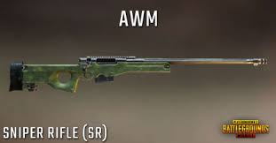
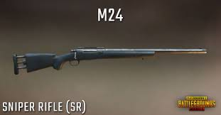
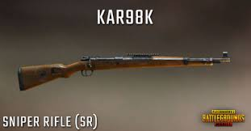

AWM

The AWM is a bolt-action rifle type weapon in BATTLEGROUNDS. It can only be found in air drops.
The AWM, or Accuracy International Arctic Warfare Magnum, designated as the L115 by the British Armed Forces, is a bolt-action sniper rifle. It was built on the older L96 frame, and was designed specifically for extensibility and ease of service. The AWM is a magnum rifle, chambered typically for the .300 Winchester Magnum. Because of this round, it has ridiculous stopping power over a very far range, and with slow reload times to balance this beast of a sniper rifle.
M24

M24 is in great demand in PUBG Mobile and is preferred by players because of its damage and faster tactical reloads. Given its firing prowess, M24 is a rare weapon and cannot be found easily.
With so many maps and places on PUBG Mobile, it is difficult to keep track of the weapon. Although weapon spawns are random and untraceable, some locations are hot drops which spawn rare items more frequently than others. Thus, after research, here is a look at the locations which might house the weapon more often.
Kar98

Kar98. Let's start with the Kar98. Not only is this the most common sniper rifle in the game, it also has the highest damage. It's base damage it 79, and if you're able to get a headshot, you can get a one-shot kill even on a level 2 helmet.With so many maps and places on PUBG Mobile, it is difficult to keep track of the weapon. Although weapon spawns are random and untraceable, some locations are hot drops which spawn rare items more frequently than others. Thus, after research, here is a look at the locations which might house the weapon more often.